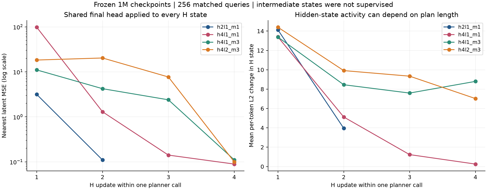

2026-10-30。承接 12 组完整实验分析。本次没有训练或修改模型；只读取冻结代码、现有 checkpoint，并计算前向读出与梯度。
核心判断：当前训练直接要求“固定循环预算结束后拟合数据计划”，没有直接要求“每次循环产生可执行、可评价且更好的计划”。最小下一步应分别检验循环输出的语义、目标回归与执行的联系、以及高层 AWR 的时间尺度，而不是把三者同时改动。
记 ξ 为共享目标编码器参数，ψ 为 observation feature 编码器参数，θ 为 planner 专属参数（H/L、planner query 和 high head），ω 为 executor 专属参数。D=128 是 latent/token 维度；r=32 是 Mixer 中间宽度。两者不同。外层 refinement K=1，H 更新 h 次，每次之前执行 ℓ 次 L 更新。
代码确实创建 M+1 个 query，只读出前 M 个；最后一个没有直接输出监督，但参与联合混合。因此 M=1/3 时 planner 也是 4/6 个 token。上一份报告的 3/5 计数已更正。这个额外槽位可以承载内部计算，但目前没有证据证明它实际扮演了某种特定工作记忆角色。
另一处澄清：训练日志 grad/norm 是各参数张量 L2 范数之和，不是拼接全部参数后的全局 L2 范数。本次机制探针则明确计算各参数组拼接后的 L2 范数。
| 对象 | M=1 | M=3 | 解释 |
|---|---|---|---|
| planner token 数 | 4 | 6 | 包含 obs、goal、计划 query、额外 query |
| H/L 核心参数合计 | 25,344 | 25,728 | 2×3r(D+S)，S=M+3；一层、无 bias 的两路 SwiGLU |
| high readout head 参数 | 657,024 | 657,024 | 共享的 512×3 MLP 与 128 维输出 |
| 全模型非 target 参数 | 3,740,126 | 3,740,916 | 只差 790；h、ℓ 不增加参数 |
所以增加 h 主要增加共享变换的组合深度；增加 M 同时改变工作槽位、监督目标、计划跨度、token 混合矩阵、归一化统计和 executor 输入。不能把 M 的对照仅解释成“多预测两个目标”。
现有 loss 只作用于 Rθ(H(h))。数学上没有约束 Rθ(H(k)) 在 k<h 时必须可解释，更没有要求相邻两次读出的任务质量单调改善。完整 BPTT 会把终点误差传到早期计算，但不等于给早期读出施加正确答案监督。
为检验这一点，本次对 6 个 1M checkpoint 使用同一最终读出头读取各次 H 更新。样本是上一轮 2048 个配对查询的前 256 个；手工展开的最终输出与原生 policy 完全一致，最大差值均为 0。以下是近端 latent MSE，均在各模型自己的固定 encoder 下计算：
| 配置 | H₁ | H₂ | H₃ | H₄ |
|---|---|---|---|---|
| h2ℓ1M1 | 3.160 | 0.110 | — | — |
| h4ℓ1M1 | 98.251 | 1.296 | 0.141 | 0.089 |
| h4ℓ1M3 | 11.058 | 4.229 | 2.395 | 0.111 |
| h4ℓ2M3 | 18.325 | 20.348 | 7.700 | 0.100 |

可支持的结论：这些模型学到了依赖固定计算深度的输出解码；额外 H 更新确实改变计算，但目前的中间读出没有经过校准，不能直接交给 executor 或作为可靠的提前停止依据。
不能据此断言：早期隐状态没有信息、推理没有发生、或者深层模型出现了隐状态数值爆炸。大误差出现在未受监督的 readout 上；归一化隐状态经过较大的非线性读出头，仍可能产生大范数输出。这里的结果也没有证明中间监督必然提高最终导航成功率。
原始 HRM 使用一步近似梯度，并在携带隐状态的外层监督段之间反复学习同一个最终目标；当前 v0 则选择完整段内 BPTT、K=1、最终一次读出。这是明确的适配选择。若给每次 H 更新增加监督，应称为本项目的辅助监督设计，不混同原始 HRM 的外层 deep supervision。来源：HRM 论文、作者实现。
代码先将 [B,S,D] 转置为 [B,D,S]，进行 token mixing 和沿 S 轴的 RMSNorm，再沿 D 轴做 channel mixing 和 RMSNorm。因此 M 改变时，归一化参与统计的槽位也改变。宽度 32 在 token 分支大于 S=4/6，在 channel 分支则小于 D=128；这两个分支承担不同的计算约束。残差路径意味着不能把整个 block 的表达秩简单限定为 32。
当 r<1 时，归一化本身就可能在某些方向放大微扰；再加上 residual、H/L 耦合和多步 Jacobian 连乘，幅度有界并不推出收缩映射，也不推出任务损失下降。即使收敛，也可能收敛到不利于导航的状态。
本次观察到 h4ℓ1M1 的 H 更新幅度约 13.39→5.12→1.23→0.26，而 h4ℓ1M3 为 13.38→8.45→7.59→8.80。这与两种 token/监督结构产生不同动力学相容，但尚不足以证明 M1 的低成功率来自过早收敛。可以继续按困难查询和成功/失败轨迹分组检验。
按由远及近编号 j=1,…,M，kⱼ=(M−j+1)Δ；接近最终目标或轨迹结尾时使用截断后的真实索引。Δ=50，ρ=0.8。定义 zⱼ=φξ(s,s(t+kⱼ))，aⱼ=V(s(t+kⱼ),g)−V(s,g)，wⱼ=min(exp(3aⱼ),100)。训练时 Gaussian 标准差为 1，因此：
把 encoder 和权重暂时固定，在函数容量充分的理想化条件下，每个槽位的最优输出是条件加权均值：
当条件数据有多种路线、姿态或速度时，这个均值未必对应某个可达 state 的编码。各位置的权重不同，也可能改变各自混合不同路线的比例。共享网络能学习位置间关系，但平方误差本身不强制整条计划一致或可执行。
目标编码使用 LengthNormalize，‖zⱼ‖=√128。预测均值没有同样的约束，所以可能离开目标编码的球面或更小的可达表征集合。不过现有末次预测的平均范数约 10.98–11.13，而目标为 11.314，偏差不大。本次还把最终预测投影回球面做了一步动作探针，6 组对 teacher 动作均值的 MSE 都略增；这里比较的是未经环境裁剪的 Gaussian 均值。因此“只做输出归一化即可解决问题”目前没有正向证据；更一般的多模态/方向误差问题仍然开放。
执行器真正看到的误差取决于它对 command 的敏感方向。令 a=fω(s,g,Z)，则局部近似：
high MSE 使用各向同性的欧氏度量，而动作影响由上式的非均匀度量决定。这解释了“低 latent MSE 与高控制收益不必一致”在数学上为何可能；是否正是本轮差异的主要原因，还需执行相关探针和对照。
训练 executor 使用数据 command Z_D，推理使用 planner 输出 μ。联合生成消除了 planner 内部正确前缀依赖，但这条模块间的分布差异仍然存在。
训练 temperature=1 对应当前 Gaussian NLL 的单位标准差；因为 low actor 使用 teacher command，它没有因此在训练时接收到带噪的 planner 输出。这项温度设置本身不会训练出对生成计划的鲁棒性。
对 6 个 checkpoint、各 4 个 64 样本批次的自动微分核验中，上述 planner 专属梯度均为 0；high loss 对 executor 专属组的梯度也为 0。与此同时 value、high、low 三项都对共享 φξ 产生非零梯度，high 与 low 都更新 observation feature 编码器 eψ。模型核心分开，不等于表征和训练动力学完全分开。
| 损失 | 共享目标编码器 φ | 共享 observation 编码器 e | planner 专属参数 | executor 的 head/Mixer |
|---|---|---|---|---|
| value | 有 | 无 | 无 | 无 |
| high | 有，经最终 goal 条件输入 | 有 | 有 | 无 |
| low | 有，经 teacher command 和 goal | 有 | 无 | 有 |
标签上的 stop_gradient 只阻止该次更新沿标签路径回传，不会冻结编码器。下一次更新，φ 改变后目标标签仍会移动。target value 的 head 有 EMA，goal_rep 仍为共享的当前编码器；不能把 target value 的整个表征通路都理解为独立慢网络。
这些事实支持将接口训练作为后续方向。例如可在固定 executor 参数时，让梯度经其 command 输入回到 planner，匹配 teacher-command 引起的动作。该候选只衡量单步局部相容性，仍不保证长程可达；不能与第一项中间监督同时加入并把增益归因于其中某一项。
high 与 low 使用同样的 β=3，但 low 的 value 差跨一步，high 的差跨 50/100/150 步。权重 cap=100 在 a≥log(100)/3≈1.535 时就触发。
考虑一个理想化确定性导航系统：到达前每步奖励 −1，到达后 0，距目标还有 d 步，γ=0.99。它的 discounted value 与前进 k 步后的 value 差为：
| 当前剩余步数 d | 前进 50 步的 V 差 | β=3、cap=100 的权重 |
|---|---|---|
| 100 | 23.897 | 100 |
| 200 | 8.747 | 100 |
| 400 | 1.172 | 33.64 |
| 600 | 0.157 | 1.60 |
即使 value 完全准确，相同 50 步推进也会因距终点不同而得到截然不同的权重；较大的正进展又都被 cap 合并。这与现有近端约 53–54%、远端约 63–64% 的 cap 率相容。因此缺陷可能出在 value 的使用方式与时间尺度，不一定首先要求替换 value 网络。
还应区分 progress score 与真正的宏动作优势。若高层命令被 executor 执行 τ 步，一个回报一致的评价需要考虑执行分布：
当前 V(s_data_future,g)−V(s,g) 既没有片段回报/折扣，也没有对 executor 是否到达该 state 求期望，因而只是数据终点的进展偏好。它是一个可用基线，不能自动等同于轨迹质量。现有实现每环境步重规划，Δ=50 是标签跨度，不能直接当作 τ=50，或据此把高层 discount 改成 γ^50。
上一轮把近端系数含 1/M 作为可能瓶颈，这是候选解释，不是学习速度结论。Adam 下，若某组参数的所有梯度都乘以同一个常数 c>0，第一矩和第二矩分别按 c、c² 缩放；忽略 ε 时二者在更新中近似抵消：
这个结论要求一致的常数缩放和对应优化轨迹，不能直接跨不同 M 模型使用。其作用是排除“除以 3，所以更新必然减为三分之一”的推断。真正值得考察的是近/远梯度方向与相对权重，以及 high 与 value/low 对共享参数的相对贡献。近端的动作敏感性更强本来也符合局部执行职责，不能仅凭此认定 38% 的加权系数份额一定不足。
优先实验 A：固定 h=4、ℓ=2、M=3，只增加弱的共享头中间监督。不增加独立读出头，保持全 BPTT、现有 critic、AWR 和 executor。令 L_H^(k) 为同一数据目标、同一逐 waypoint 权重在 H(k) 上的 loss：
各次监督系数总和为 1，避免只因多读出而把总 high loss 机械放大。它增加读出计算，不增加参数；完整 BPTT 保留。实验目的首先是让中间计算可解码，同时观察最终成功率、近端局部可执行性、各次输出和梯度。中间误差降低而导航不变，说明只获得了可读性；若最终效果下降，则可能限制了有用的中间计算。这两种结果都能收缩假设。该设计不保证单调改善或 test-time scaling。
独立实验 B：从 v0 出发，只降低 high_alpha 的尺度。例如先以 3→0.3 作对照，low_alpha 保持 3。同步报告 cap、ESS、权重均值和梯度，区分权重区分能力与有效 loss 尺度的变化。它检验现有 value 的使用是否饱和，不与实验 A 同时叠加，也不把参数值当作已确定的最优值。
用于解释 h/M 交互的后续结构对照：在 M=1 接口下保留与 M=3 相同数量及位置的 planner 槽位，只监督/传出近端目标。它可以帮助区分额外内部计算槽位及归一化变化，与多 waypoint 监督的作用。该对照仍需清楚标记哪些槽位无监督，保持 executor 的单目标输入。
补 seed 与同协议 CoGHP 基线仍是结果验证的一部分，但不需要继续扩大 h/ℓ/M 全网格。先固定最有信息量的配置，为每项修改写清楚预期现象和反证条件。
源文件与实验冻结版本逐文件 SHA256 一致；模型保持 1M checkpoint。6 个模型各 256 个相同输入；梯度按 4 个 64 样本批次计算。手工 H/L 展开的最终输出均与原生 policy 精确一致。数据：mechanism_probes.json；脚本：只读核验脚本。统计组 executor 指 low_actor_head 与 action_mixer_blocks，不包含 action_query_token；所有 planner 专属参数均包含在 planner 组。
关键实现位置：impls/networks/policies.py:235、409、485；impls/networks/backbones.py:388、613；impls/agents/navigation.py:590、638、658、753；impls/utils/networks.py:65、192；impls/utils/datasets.py:468；impls/utils/flax_utils.py:140。